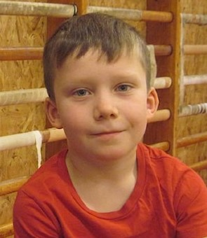

Viktor
Bogren
Info
Viktor Bogren
Kvarngärdesgatan 20A
0733479023
viktorbogren04@gmail.com
Jag är född den 16 maj 2004, jag är 17år gammal och går andra året i gymnasiet. På fritiden brukar jag köra motorcykel på väg samt bana, jag brukar även styrketräna och spela padel. Jag är en entreprenörs riktad person som gillar att hitta på nya sätt att arbeta på. Jag tycker även bemötande med andra och nya människor är roligt.
Arbetslivserfarenheter
- 2018 Jun-Nuvarande Diverse Utomhusarbete
- 2021 Jun-2021 Jul Feriepraktik Eskilstuna Kommun
- 2017 Jul-2020 Sep Tidningsförsäljnung-Expressen
- 2019 Okt Prao-Mc Palatset
- 2018 Okt Prao-Odlarens förskola
Utbildning
- 2020-Pågår Gymnasieskola-teknikprogramet Grillskagymnasiet Eskilstuna
- Avslutad-2020 Grundskola-Djurgårdsskolan Eskilstuna